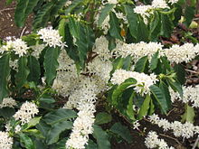
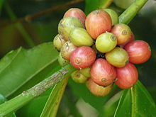

Beans
Arabica
Coffea arabica is a species of Coffea originally indigenous to the mountains of the southwestern highlands of Ethiopia. It is also known as the "coffee shrub of Arabia", "mountain coffee" or "arabica coffee". Coffea arabica is believed to be the first species of coffee to be cultivated, being grown in southwest Ethiopia for well over 1,000 years.
It is said to produce better tasting coffee than the other major commercially grown coffee species, Coffea canephora (robusta), because robusta cherries contain twice as much caffeine as arabica. Caffeine itself has a bitter taste, making robusta more bitter. C. arabica contains less caffeine than any other commercially cultivated species of coffee.
Wild plants grow to between 9 and 12 m (29 and 39 ft) tall, and have an open branching system; the leaves are opposite, simple elliptic-ovate to oblong, 6–12 cm (2.4–4.8 in) long and 4–8 cm (1.6–3.2 in) broad, glossy dark green. The flowers are white, 10–15 mm in diameter and grow in axillary clusters. The seeds are contained in a drupe (though commonly called a "cherry"; the plural form is simply "cherry"—used only when referring to the fruit of C. arabica—when referring to the actual cherry fruit, the appropriate plural is "cherries") 10–15 mm in diameter, maturing bright red to purple and typically contains two seeds (the coffee seeds).
Robusta
Coffea canephora , commonly known as Robusta coffee, is a species of coffee that has its origins in central and western sub-Saharan Africa. It is a species of flowering plant in the Rubiaceae family. Though widely known as Coffea robusta, the plant is scientifically identified as Coffea canephora, which has two main varieties, robusta and nganda.
The plant has a shallow root system and grows as a robust tree or shrub to about 10 metres. It flowers irregularly, taking about 10–11 months for cherries to ripen, producing oval-shaped beans. The robusta plant has a greater crop yield than that of C. arabica, and contains more caffeine – 2.7% compared to arabica's 1.5%. As it is less susceptible to pests and disease, robusta needs much less herbicide and pesticide than arabica.